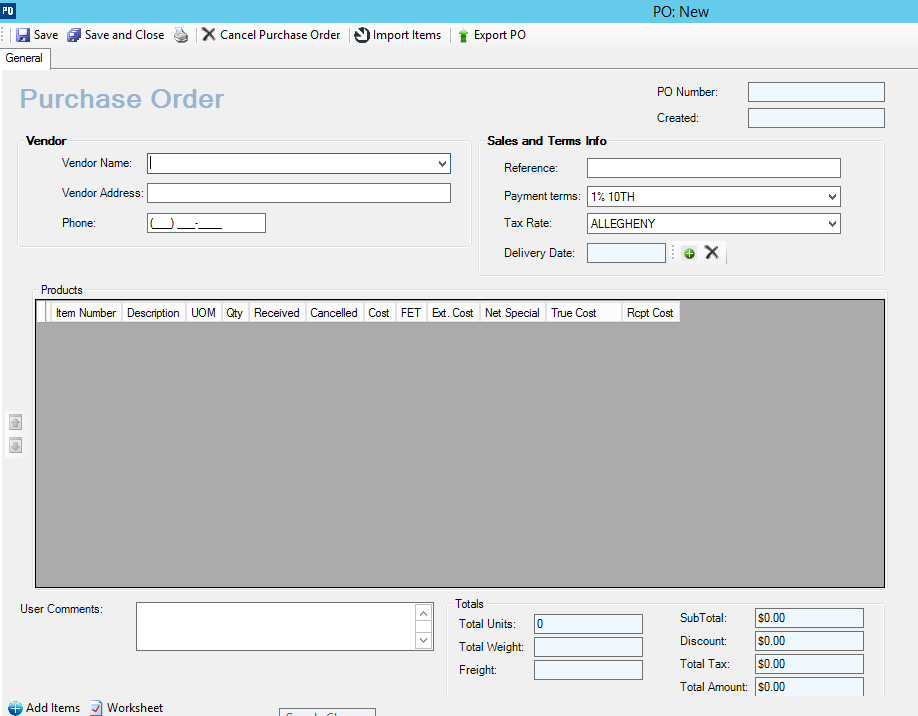
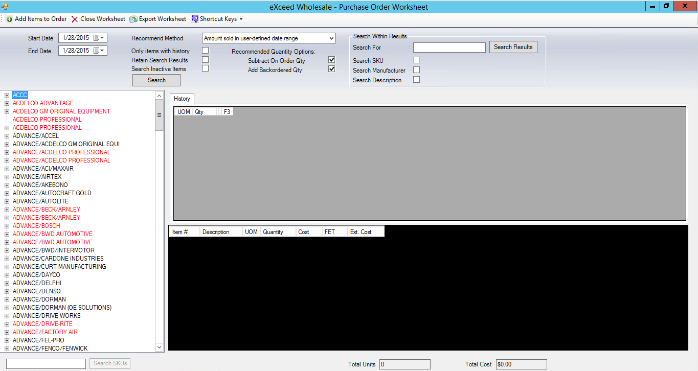
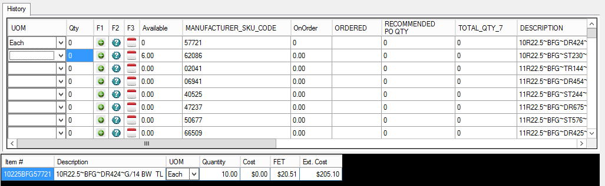
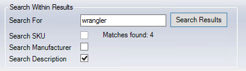

Purchase Order Worksheet
Used when ordering large quantities from a specific manufacturer
Home Screen: Select then select from start a task

Create Purchase Order
- Select Vendor from dropdown
- Vendor information defaults from vendor master
- Populate Reference (required)
- Populate delivery date if known
- Select plus to select from calendar
- Select X to remove date previously populated
- Select Worksheet

- Select Date ranges
- Select Recommended Method (generally mix max vs. available)
- Check desired fields (by default all unchecked)
- Only items with History
- Retain Search Results
- Search Inactive Items
- Check Recommended Quantity Options (by default these are checked)
- Subtract on Order Qty.
- Add Backordered Qty.
- Select Branch of tree and select search

Results will display with Qty field populated for those items determined to need replenishment
- F1 column allows you to select plus and automatically adds to shopping cart
- F2 displays the item detail information
- F3 displays 12-month item history
- Results are searchable by manufacturer or description

- Add items until complete
- Select and exit out of worksheet
- Purchase order will populate
- Additional items can be added on a one-off basis if needed by using add items
- Add comments in desired
- Select Save
- Dialog box appears showing successful save
- Purchase order is assigned next sequential number by location
- Printable, importable and exportable depending on need
- Save and close when complete